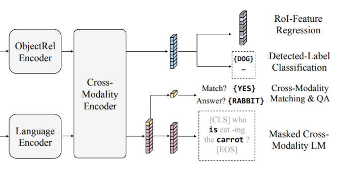

LXMERT:Transformers–Learning Cross-Modality Encoder Representations¶
简述¶
arXiv 1908.07490
收录于 EMNLP 2019
VQA Challenge 2019 #3(Ensemble), #9(Github version)
摘要¶
视觉语言推理这一问题的难点主要在于不同模态之间的关系与相应语义的配对。
建立的框架名为“用Transformers学习跨模态编码表征”
由三个编码器组成：物体关系编码器、语言编码器、跨模态编码器
在五个不同的具有代表性的任务上进行大量的预训练：掩码语言模型、掩码物体预测（特征回归和标签分类）、跨模态匹配、图片问答。
对预训练的参数进行微调后可以达到比较好的效果。
模型结构¶
)
该跨模态模型是建立在自注意力和交叉注意力层上的（也即Transformers），如图1所示，我们的模型使用两个输入：一张图片和一个相关语句。通过精心设计的自注意力和交叉注意力层的结合，我们的模型能够学到图片、文字和跨模态的表示。
嵌入环节¶
单词级别语句嵌入：词嵌入与索引嵌入相加后进行标准化。
物体级别图片嵌入：我们把检测到的物体的特征作为图片嵌入。使用两层全连接层的感知机来学习物体的标定框和其2048维度的兴趣区域特征的联合嵌入。
输出表示¶
见示意图，分别有三个输出部分，视觉和语言输出分别是由跨模态编码器生成的特征序列，而跨模态输出则和BERT的实践很类似：我们在输出的语句前增加了一个特殊的短语[CLS]，而这个短语对应的特征被用来当作跨模态输出
预训练策略¶
在大规模数据集上进行预训练也可以视作是某种“知识嵌入”的形式的体现
掩码语言任务：与BERT基本相同，给0.15的词加上掩码并要求通过上下文的特征对掩码的内容进行预测，但该模型把从图片获得的视觉特征也作为预测掩码内容的依据之一
- 掩码物体任务：思路与上一个类似，使用全零特征作为掩码。本任务又分成两个子任务：ROI（兴趣区域）特征回归和检测标签分类。作者提到这部分预训练的数据集由于标注不同而noisy，但实验结果表明效果其实很不错
- 跨模态任务：以0.5的概率让图片和语句乱序配对，训练一个跨模态的配对分类器（判断语句与图片是否匹配）这里假定不同图片的描述语句与其它图片没有匹配关系
图片问答任务：为了扩大预训练数据集，把图片对应的问题也算作图片描述的语句。实验表明，这样使用数据集也能增强跨模态特征提取的能力
预训练使用的数据集：
caption: MSCOCO, Visual Genome
image question answering: VQA v2, GQA(balanced), VG-QA
预训练具体过程见论文
模型微调¶
在应用到具体任务时，微调过程十分迅速且抗干扰能力强，只要修改模型结构，使用数据集训练4个epoch即可
实验结果¶
在VQA数据集上，该模型的所有表现都优于许多现有工作，甚至在计数类问题上的精度要略高于专门使用计数模块增强的BAN
与BERT结合、仅在BUTD模型上使用跨模态编码器等方案都劣于现有模型效果
忽略视觉特征会降低模型效果
数据增强的对模型的影响效果劣于直接在大规模数据集上进行预训练
消融研究表明，模型结构和预训练策略对模型结果都会产生较大影响